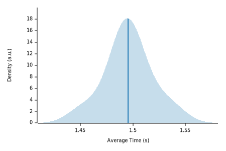
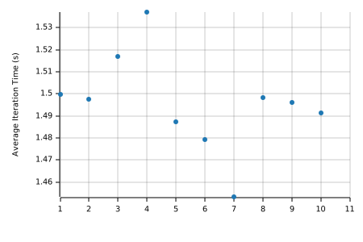

High-Performance Bitemporal Processing Benchmarks
|  |  |
| Lower bound | Estimate | Upper bound | |
|---|---|---|---|
| R² | 0.0031428 | 0.0043521 | 0.0031463 |
| Mean | 1.4827 s | 1.4956 s | 1.5086 s |
| Std. Dev. | 7.7549 ms | 21.961 ms | 30.342 ms |
| Median | 1.4853 s | 1.4968 s | 1.5077 s |
| MAD | 1.8101 ms | 11.126 ms | 36.733 ms |
The plot on the left displays the average time per iteration for this benchmark. The shaded region shows the estimated probability of an iteration taking a certain amount of time, while the line shows the mean. Click on the plot for a larger view showing the outliers.
The plot on the right shows the average time per iteration for the samples. Each point represents one sample.
See the documentation for more details on the additional statistics.
| Lower bound | Estimate | Upper bound | ||
|---|---|---|---|---|
| Change in time | -14.296% | -9.3838% | -4.8774% | (p = 0.00 < 0.05) |
The plot on the left shows the probability of the function taking a certain amount of time. The red curve represents the saved measurements from the last time this benchmark was run, while the blue curve shows the measurements from this run. The lines represent the mean time per iteration. Click on the plot for a larger view.
The plot on the right shows the iteration times for the two measurements. Again, the red dots represent the previous measurement while the blue dots show the current measurement.
See the documentation for more details on the additional statistics.
{kind=link}
{kind=link}
{kind=link}
{kind=link}
{kind=link}
{kind=link}
{kind=link}
{kind=link}
{kind=link}
{kind=link}
{kind=link}
{kind=link}
{kind=link}